Mode 7 · reference, byte 129 provisional
Wall progression 1.00s after fitted reference origin. Factor before 1.000; after 1.000. Optical frame 270, t=9.000s. RGB brightness is camera-dependent; alignment is approximate.
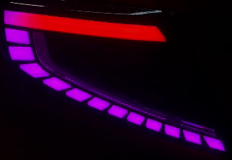

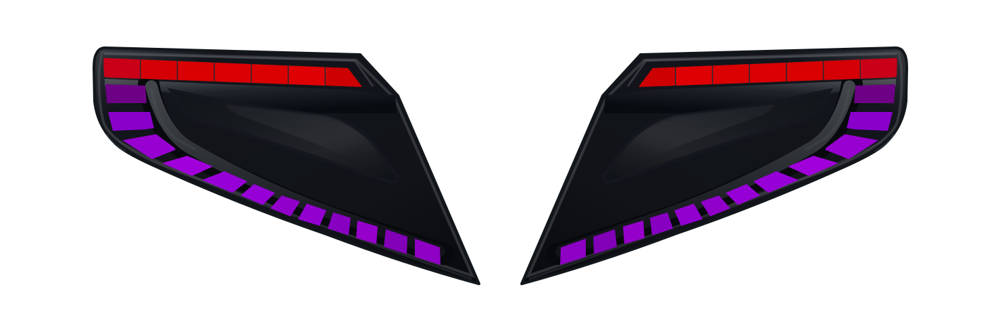
Source geometry and RGB data are unchanged. Before/after differs only in the shared duration factor. Reference alignment uses lower-zone red fronts; it is not a BLE timestamp. Bytes are tentative.
Wall progression 1.00s after fitted reference origin. Factor before 1.000; after 1.000. Optical frame 270, t=9.000s. RGB brightness is camera-dependent; alignment is approximate.


Wall progression 2.00s after fitted reference origin. Factor before 1.998; after 2.356. Optical frame 530, t=17.667s. RGB brightness is camera-dependent; alignment is approximate.
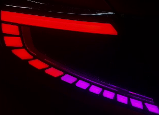

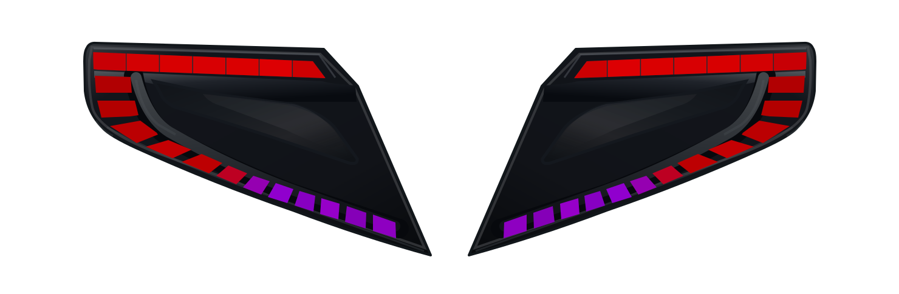
Wall progression 0.80s after fitted reference origin. Factor before 0.233; after 0.356. Optical frame 842, t=28.067s. RGB brightness is camera-dependent; alignment is approximate.
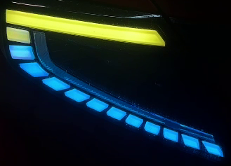
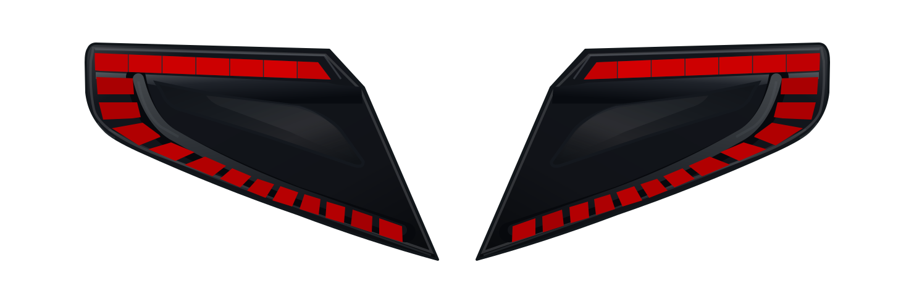
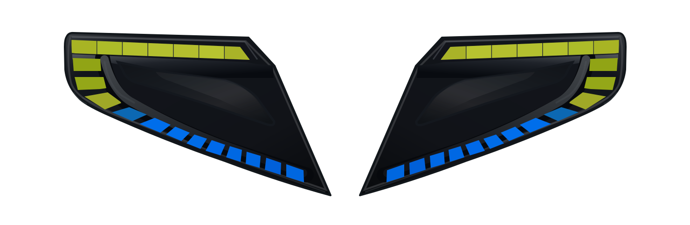
Wall progression 1.00s after fitted reference origin. Factor before 1.000; after 1.000. Optical frame 110, t=3.667s. RGB brightness is camera-dependent; alignment is approximate.
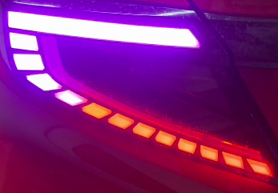
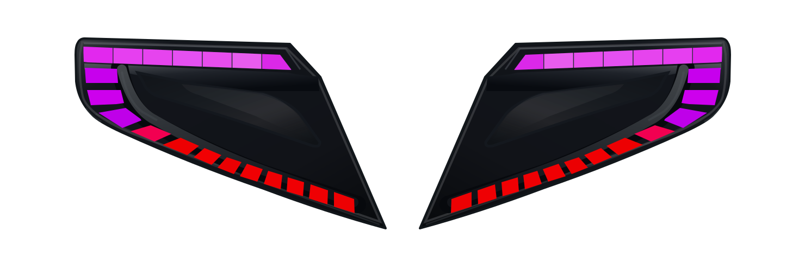

Wall progression 2.00s after fitted reference origin. Factor before 1.998; after 2.397. Optical frame 367, t=12.233s. RGB brightness is camera-dependent; alignment is approximate.
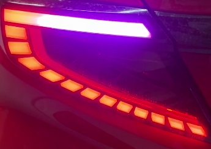

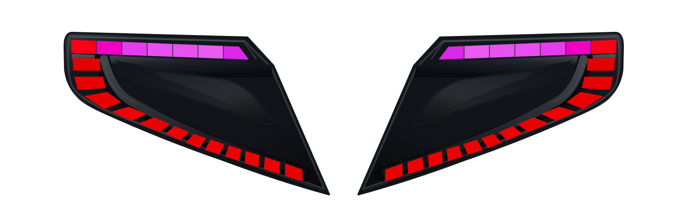
Wall progression 0.80s after fitted reference origin. Factor before 0.233; after 0.362. Optical frame 647, t=21.567s. RGB brightness is camera-dependent; alignment is approximate.
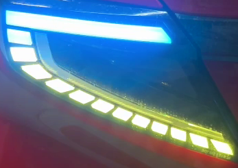
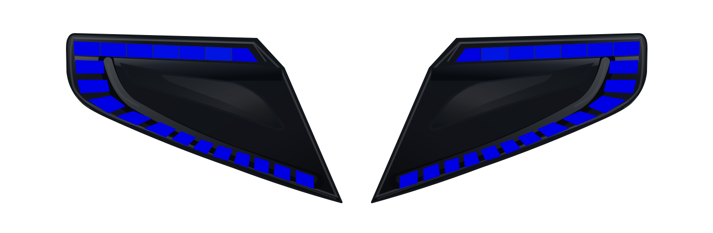
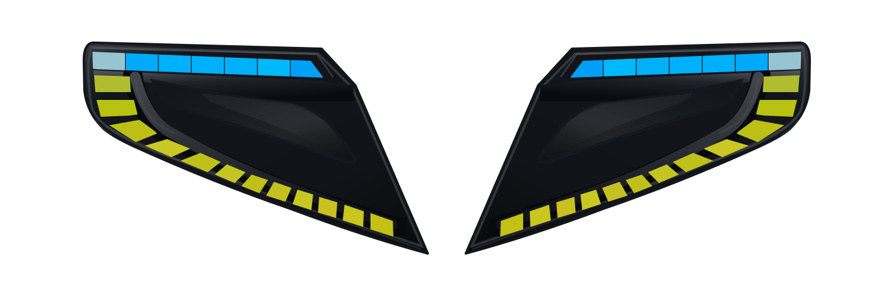